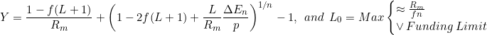

Refinancing
Sep. 2021
From previous results, the combined yield (Y) of the down payment and mortgage liability depends on the leverage ratio (L) and the equity buildup ΔE(n)/p. The optimum for both of these depends on the timeframe (n) the mortgage is owned before being resold or refinanced.

As a powerful argument as to the nature of fiat currency, as real interest rates continue to trend near zero, the optimum period for owning a mortgage liability becomes approximatable analytically! A powerful example of the Fisher equation.
For the sake of this article, if we assume real interest rates are zero, or that the inflation rate equals the nominal interest rate (IPR = APR), then the first intersection point of the "optimum refinance window" can be found with a quadratic formula. This window represents a tangent point for comparing capital gains from equity buildup to regular dividend yields from stocks or rental income.

The long tangent of the last three articles was to reach this point. Now the mortgage calculator can estimate yields from the loan liability for comparisons to stocks or other investments!